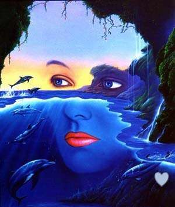

องค์ประกอบการออกแบบ (Elements)
1. องค์ประกอบในความคิด (Conceptual Elements )
องค์ประกอบในความนึกคิดไม่สามารถมองเห็นได้ ไม่มีตัวตน แต่ดูเหมือนจะคงอยู่โดยทั่วไป เช่น เรารู้สึกว่ามีจุดอยู่ตรงมุมของรูปร่าง มีเส้นอยู่บริเวณรูปร่างของวัตถุมีระนาบหุ้มห่อปริมาตร แต่ความจริงแล้ว องค์ประกอบเหล่านั้นไม่ได้อยู่ที่บริเวณดังกล่าวอย่างแท้จริง
2. องค์ประกอบที่มองเห็นได้ (Visual Elements )
องค์ประกอบที่มองเห็นได้ (Visual Elements ) จะเป็นตัวแทนขององค์ประกอบในความนึกคิด (Conceptual Elements ) โดยเมื่อเราเขียน จุด เส้น ระนาบ หรือปริมาตรลงบนกระดาษ เราจะไม่เพียงแต่มองเห็นความกว่างความยาวเท่านั้น แต่จะเห็นถึงสีและพื้นผิว ซึ่งขึ้นอยู่กับวัสดุที่เราใช้และวิธีใช้
3. องค์ประกอบที่สัมพันธ์ (Relational Elements )
องค์ประกอบตั้งแต่หนึ่งองค์ประกอบขึ้นไป จำเป็นจะต้องควบคุมการจัดวาง โดยคำนึงถึงความสัมพันธ์ขององค์ประกอบในการสร้างความสัมพันธ์ระหว่างองค์ประกอบนี้ ทิศทางและตำแหน่งการจัดวางสามารถรับรู้ได้
4. องค์ประกอบที่นำมาใช้ประโยชน์ (Practical Elements)
4. 1 งานที่เหมือนจริง (Representation) เมื่อรูปร่างในงานศิลปะได้ถ่ายทอดมา
จากธรรมชาติหรือโลกที่มนุษย์สร้างขึ้น เราจะเรียกงานนั้นว่างานที่เหมือนจริง (Representation)ซึ่งอาจจะดูเหมือนจริงจนใกล้จะเป็นงานนามธรรม
4.2 ความหมาย (Meaning) ความหมายของงานศิลปะแต่ละชั้นจะแสดงออกเพื่อสื่อสารสามารถแสดงแนวคิดในการออกแบบ
4.3 ประโยชน์ใช้สอย (Function) ประโยชน์ใช้สอยในการออกแบบจะแสดงออกเมื่องานออกแบบนั้นสนอง
ความต้องการทางดันการใช้สอยของมนุษย์รูปแบบของทัศนศิลป์สากล
ทัศนศิลป์สากลเกิดจากการจัดภาพแบบสากลที่ได้ผสมผสานรูปแบบต่าง ๆ เข้าด้วยกันผ่านการทดลองปวับปรุง ดัดแปลง เลือกสรรจนวิวัฒนาการรูปแบบเป็นที่นิยมทั่วทุกชาติ
โดยแบ่งรูปแบบออกตามลักษณะของงานที่สร้างสรรค์ได้ 3 รูปแบบ คือ
ㆍรูปแบบรูปธรรม (Realistic) ศิลปะแบบเหมือนจริงเป็นศิลปะที่ไม่ซับซ้อนมีเนื้อหาสาระที่ปรากฏเด่นชัดแต่ผู้สร้างและผู้ชมต้องมีความรู้เรื่องนั้นด้วย
ㆍรูปแบบกึ่งนามธรรม (Semi Abstract) เป็นการถ่ายทอดที่ผิดเบนไปจากรูปธรรมหรือแบบเหมือนจริงด้วยการตัดทอนรูปทรงจากของจริงให้เรียบง่ายแต่ยังมีเค้าโครงเดิมอยู่สามารถดูรู้ว่าเป็นภาพอะไร
ㆍรูปแบบนามธรรม (Abstract Art) เป็นศิลปะประเภทที่ไม่มีความจริงเหลืออยู่ เพราะถูกตัดทอนให้เหลือแค่เส้น สี น้ำหนัก ที่ก่อให้เกิดความงามตามอารมณ์ความรู้สึกเป็นสิ่งที่เหนือความเป็นจริง

คุณค่าของงานทัศนศิลป์
ทัศนศิลป์เป็นศิลปะที่รับรู้ไต้ด้วยสายตา การรับรู้ทางการมองเห็นในแขนงจิตรกรรมประติมากรรมและสถาปัตยกรรม ทำให้เกิดแรงกระตุ้นและตอบสนองทางด้านจิตใจพร้อมกันนั้นจิตใจของมนุษย์ก็เป็นตัวแปรค่าและกำหนดความงาม ความประณีต เรื่องราวและประโยชน์ต่อสังคมมนุษย์
1 คุณค่าทางความงาม (Aesthetic Value)
เป็นการรวบรวมใน.รื่องของความประณีต ความละเอียด มีระเบียบ น่าที่ง มโหฬาร ประหลาด แปลกหูแปลกตา และเป็นสิงที่มีคุณงามความดี ทำให้รู้เห็นเกิดความประทับใจไปอีกนาน สิ่งเหล่านี้รวมเรียกว่าคุณค่าทางความงาม โดยเกณท์ของความงามที่อยู่ในงานทัศนศิลป์ ซึ่งสามารถยอมรับได้โดยทั่วไป
2. คุณค่าทางเรื่องราว (Content Value)
เป็นการแสดงลักษณะบ่งบอกถึงความหมายเรื่องราวความเกี่ยวซ้องและจุดประสงค์แฝงอยู่ในผลงาน สามารถบอกเนื้อหาสาระสำคัญว่ามีอะไร จะต่อไปอย่างไร เพราะทัศนศิลป์แต่ละชั้นบอกเรื่องราวต่าง อยู่ในตัวเอง ทางด้านความงาม
3 คุณค่าเรื่องราวเกี่ยวกับประวัติศาสตร์
เป็นเรื่องราวที่นำเสนอเหตุการณ์สำคัญของคนแต่ละเชื้อชาติที่น่าสนใจ ซึ่งส่วนใหญ่จะเป็นเรื่องของอดีต อาจเป็นเรื่องของการต่อสู้ อาจเป็นเรื่องของการต่อสู้เพื่ออิสรภาพ การเรียกร้องสิทธิต่าง ๆ และพงศาวดารในแต่ละสมัย เรื่องราวที่นำมาถ่าย
4. คุณค่าเรื่องราวเกี่ยวกับความเชื่อในสิ่งเร้นลับ ศรัทธา
มนุษย์ไม่ว่าชาติใดย่อมมีความกล้าด้วยกันทั้งสิ้น เมื่อมนุนย์เกิคคามกลัว มนุษย์จะหาสิ่งที่มาคลี่คลายดับความกลัวให้เบาบางลง
5 คุณค่าเรื่องราวเกี่ยวกับศาสนา วัฒนธรรม ประเพณี
มนุษย์ทุกคนย่อมมีศาสนาวัฒนธรรมและประเพณีของตนเอง และด้วยความรัก ความศรัทธาทำให้กิดพลังและแรงบันบาลใจอันมหาศาลที่จะถ่ายทอดความเชื่อ ความศรัทธา ให้ผู้อื่นได้รับรู้เรื่องราวที่เกี่ยวกับศาสนาและวัฒนธรรม จึงถูกสะท้อนผ่านจินตนาการและคิดสร้างสรรค์ออกมาทางรูปแบบงานทัคนศิลป์ในหลากหลายประเกทตลอดทุกยุคทุกสมัยเปรียบเสมือนภาพจำลองเหตุการณ์
6 คุณค่าเรื่องราวเกี่ยวกับการเมือง การปกครอง เช่น การสร้างประติมากรรมอนุสาวรีย์บุคคลสำคัญ ๆ เพื่อเป็นอนุสรณ์แสดงว่าบุคคลยู่นั้นเป็นความสามารถในการเมือง การปกครอง
7 คุณค่าเรื่องราวเกี่ยวกับชีวิตประจำวันของคนที่เกี่ยวข้องกับสิ่งต่าง ๆ
เป็นกาวฝ่ายทอดเกี่ยวกับการเผชิญในสิ่งที่มนุษย์ได้กระทำอยู่ในแต่ละวัน เพราะการดำรงชีวิตอยู่ของมนุษย์ในสังคมต้องการความสุขโดยอาศัยปัจจัยสำคัญที่ ทำให้เกิดความสุขในแต่ละวัน ได้แก่ ทางรางกาย จิตไจ อารมณ์ และทางด้านสังคม ดังนั้นเรื่องราวที่นำเสนอเพื่อให้เกิดคุณค่า
8. คุณค่าเรื่องราวเกี่ยวกับธรรมชาติและสิ่งแวดล้อม
คุณค่าของเรื่องราวลักษณะนี้เป็นการนำเสนอในเรื่องของความงามของธรรมชาติสิ่งแวดล้อม และการพึ่งพาอาศัยกันระหว่างมนุษย์กับธรรมชาติและสิ่งแวดล้อม พร้อมทั้งเสนอแง่คิดว่าทำไมมนุษย์จึงทำลายธรรมชาติกับสิ่งแวดล้อม และทำไมเราต้องรณรงค์ต่อต้านการทำลายธรรมชาติ ลิ่งแวดล้อม สมควรที่จะอนุรักษ์ให้อยู่คู่มนุษย์สืบไป
9. คุณค่าเรื่องราวเกี่ยวกับวรรณคดี นิทานพื้นบ้าน สำนวน คำพังเพย สุภาษิต
เป็นการถ่ายทอดเรื่องราวจากหนังสือ นิทานพื้นบ้าน สำนวน คำพังเพย สุภาษิต ตำนาน พงศาวดาร ที่สามารถบรรยายเนื้อหาเรื่องราวให้ผู้ดูได้รู้อย่างชัดเจน โดยแสดงเป็นภาพเล่าเรื่อง เช่น ภาพจิตรกรรมไทย สังข์ทอง และรามเกียรติ์ เป็นต้น
10. คุณค่าเรื่องราวเกี่ยวกับความเจริญก้าวหน้าทางวิทยาศาสตร์และเทคโนโลยี
เป็นการนำเสนอเรื่องของคามเจริญก้าวหน้าในด้านวิทยาการต่างๆ ที่นำพาให้ประเทศนั้น ๆ เจริญรุ่งเรื่อง คุณค่าของเรื่องราวประเทนี้สามารถโน้มาวให้ผู้ชมเห็นความสำของวิทยาศาสตร์และเทคโนโลที่ทันสมัย เช่น เรื่องราวเกี่ยวกับอุดสาหกรรม ยานอวกาควงการแพทย์ เครื่องมือเครื่องใช้ต่าง ๆ และการสื่อสาร เป็นตัน
11 คุณค่าของงานทัศนศิลปีต่อชีวิตและสังคม
"ชีวิตตาย ธาณาจัารพินศ แกปะโชนอยุคคณลายทายสิ้นไป แต่ศิลปะท่านั้นที่ยังคงเหลือเป็นพยานแห่งความเป็นอัจฉริยะของมนุษย์อยู่ตลอดกาล"
ข้อความข้างตันนี้เป็นความเห็นอันเฉียบคมของท่าน ศาสตราจารย์ศิลป พีระศรีผู้กอตั้งมหาวิทยาลัยศิลปากร แสดงให้เห็นว่างานศิลปะเป็นสมบัติอันล้ำค่าของมนุษย์ที่แสดงความเป็นอัจฉริยะบ่งบอกถึงความเจริญทางด้านจิตใจและสติปัญญาอันสูงกว่า ซึ่งมีคุณค่าต่อชีวิตและสังคม
12. คุณค่าในการยกระดับจิตใจ
คุณค่าของศิลปะอยู่ที่ประโยชน์ ช่วยจัดความโฉดความฉ้อฉลยกระดับวิญญาณความเป็นคนเห็นแก่คนบทกวีของเนาวรัตน์ พงษ์ไพบูลย์ กวีซีไรของไทยได้ให้ความสำคัญของงานศิลปะในการยกระดับวิญญาณความเป็นคนก็คือ การยกระดับจิตใจของคนเราให้สูงขึ้นด้วยการได้ชื่นชมความงามและความประณีตละเอียดอ่อนของงานศิลปะ
ดังนั้นเมื่อใดที่มนุษย์ได้ชื่นชมความงามของศิลปะเมื่อนั้นมนุษย์ก็จะมีจิตใจที่แช่มชื่น และละเอียดอ่อนตามไปด้วย เว้นแต่บุคคลผู้นั้นจะมีสติวิปลาศ นอกจากนี้งานศิลปะบางชิ้น ยังให้ความงามและความรู้สึกถึงความดีงาม และคุณงาม จริยธรรมอย่างลึกซึ้ง เป็นการจรรโลงจิตใจให้ผู้ดูเคร่งเครียดและเศร้าหมองของศิลปินผู้สร้างสรรค์และผู้นชมได้เป็นอย่างดี
13 คุณค่าเรื่องราวเกี่ยวกับธรรมชาติและสิ่งแวดล้อม
งานจิตรกรรม เป็นศิลปะที่สื่อความงามและความรู้สึกไปสู่ผู้ดูหรือผู้ชื่นชมได้โดยง่าย คุณค่าเบื้องต้น เป็นคุณค่าทางต้นจิตใจในการชมความงาม ความละเอียดอ่อนของเส้น
สี เเสง และองค์ประกอบของศิลป์ต่าง ๆ ช่วยผ่อนคลายอารมณ์ และให้คติธรรม แนวคิดในการดำรงชีวิต และยังรักษาขนบธรรมเนียม ประเพณีวัฒนธรรม ศาสนา และประวัติศาสตร์จากจิตรกรรมฝาผนังต่างๆ
งานประติมากรรม เป็นศิลปะที่สื่อความงามและความรู้สึกไปสู่ผู้ดหรือผู้ชื่นชมได้ ด้วยรูปทรง และพื้นผิว โดยมีแสงสว่างมากระทบให้เกิดเงาจากมิติความตื้นลึกของรูปทรงนั้นๆ งานปัตยกรรมเป็นศิลปะที่ใช้ประโยชน์ใช้สอยมากกว่า เพราะเป็นอาคารสถานที่สูงและเป็นที่อยู่อาศัยของมนุษย์นั่นเอง
14 คุณค่าของผู้ชื่นชมและสังคมส่วนรวม
บทบาทของประชาชนทั่วไปในการใช้ประโยชน์และคุณค่าของสถาปัตยกรรมนับตั้งแต่บ้านเรือน ที่อยู่อาศัย โดยเริ่มต้นจากการดูแลรักษาความสะอาด ความเป็นระเบียบร้อยภายในบ้าน การใช้หลักทางศิลปะและรสนิยมส่วนตัวตกแต่งบ้านเรือนโดยเฉพาะอย่างยิ่งการประดับตกแต่งด้วยต้นไม้และพื้นที่สีเขียวภายในบ้าน สำหรับงานทางศิลปะที่มีคุณค่าทางวิจิตรศิลป์
 
|